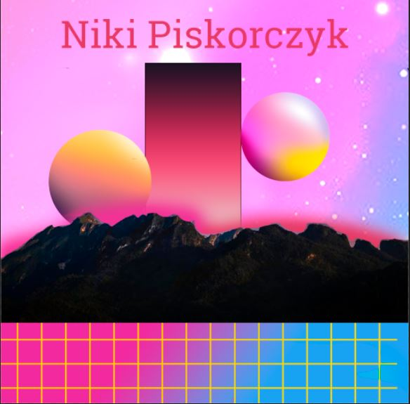
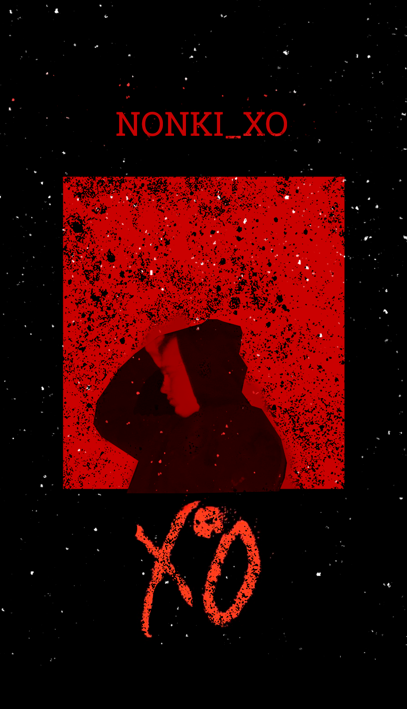
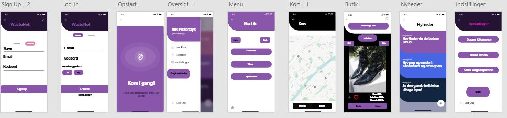

I henhold til Inspiration, baserer meget af det som jeg arbejder med i henhold til Musik, og andre forskellige kunstnere. Det som jeg har mest interesse i. Men også i 80'ers Retrowave ligger mine interesser i visuelt.
I henhold til Cover Arts har jeg en stor interesse i at lave forskellige baseret på kunstnere i de forskellige musikgenre.
Inside Your MindJeg leger også rundt med forskellige designs til ideer for musikalske album og single-arts som ideer.
WasteNot I det her projekt, blev jeg inspireret til at arbejde ud for at lave en applikation til en tøj-genbrugsbutik i Adobe XD tilbage i 2019.
